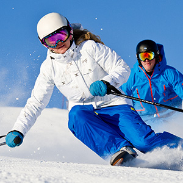

Zermatt
Zermatt, c’est 450 acres de domaine skiable sur 7 versants. C’est 141 pistes pour tous les niveaux dont 101 sont éclairées. C’est un damage régulier pour des conditions idéales en tout temps.
À moins d’une heure de Genève, de Chamonix et de Lausanne, c’est la place pour profiter pleinement de la saison de ski.
VOIR PLUS
Un sommet d’émotions
Grâce au ski alpin, au Parc aquatique, aux Activités en montagne, au vélo de montagne, à la randonnée pédestre et aux événements automnaux, les amateurs de plein air peuvent se glisser dans un décor idyllique, noyer l’ennui, rouler sur l’hors de l’ordinaire réseau de sentiers, avancer au rythme des saisons et apprécier la beauté du moment présent.
VOIR PLUS